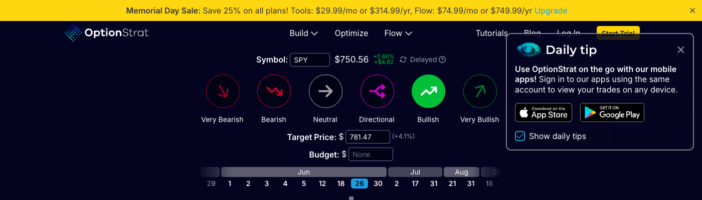
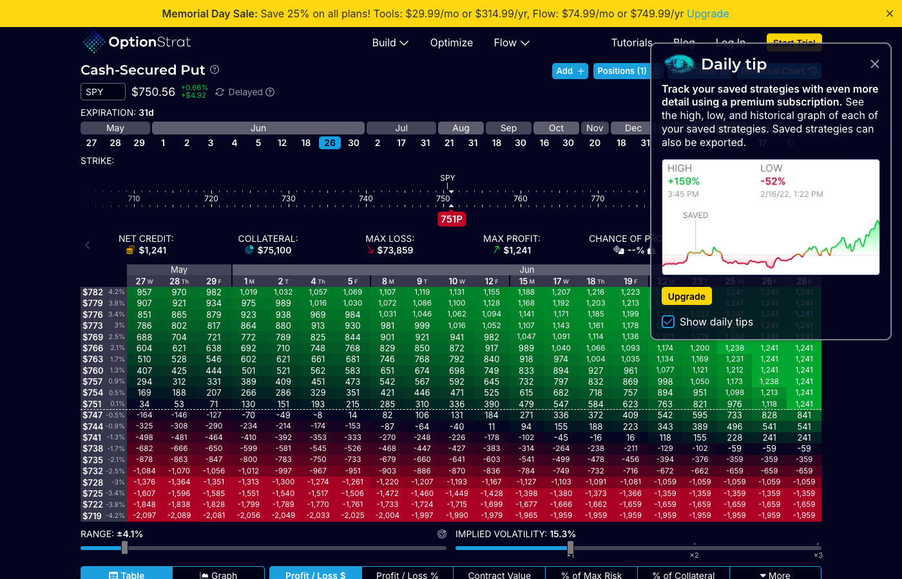
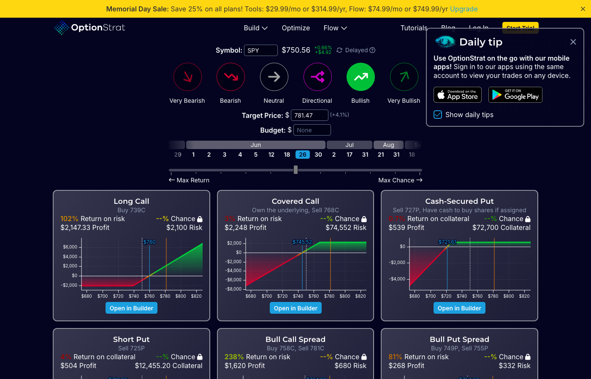
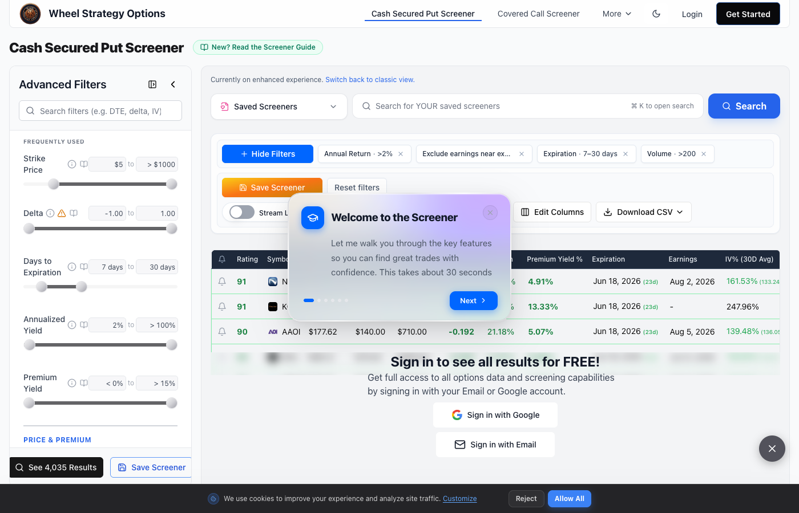
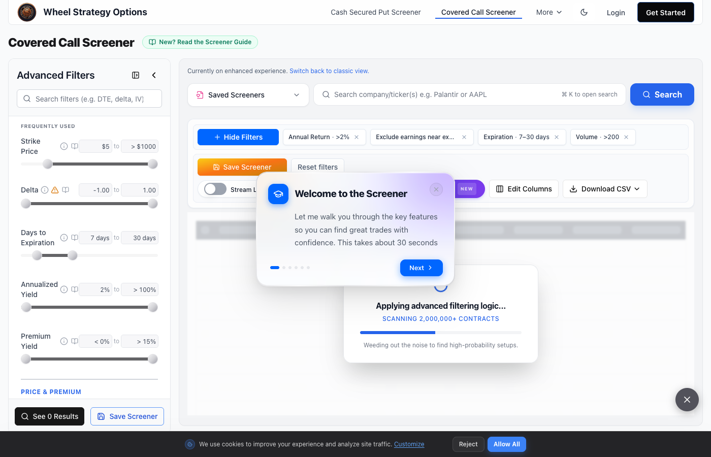
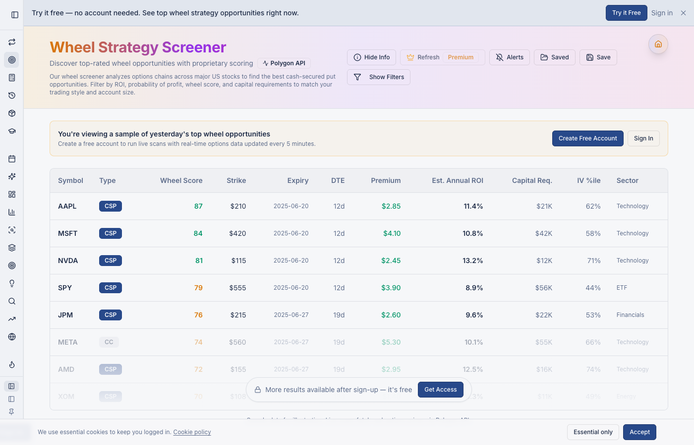
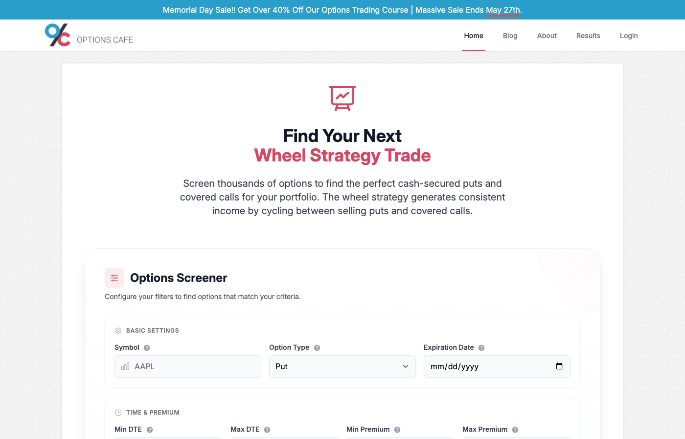
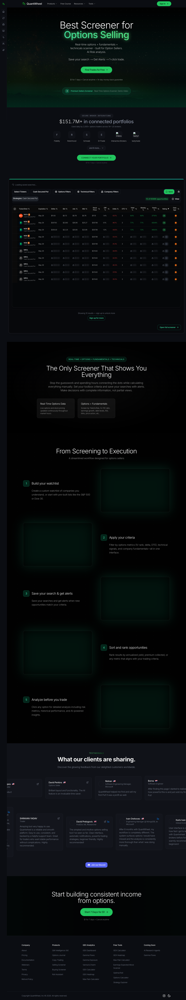

Sentiment Dials + Expiration Timeline

Circular sentiment selectors — 6-state toggle row (Very
Bearish → Very Bullish) using circular icon buttons. Active state fills circle
with directional color (red/green). Directional arrows encode the bias
visually.
Expiration timeline scrubber — horizontal date strip grouped
by month. Selected DTE highlighted with a filled pill. Intuitive for wheel
traders targeting 30–45 DTE.
CSP Strike Grid (Color-Coded Heatmap)

Strikes × Expirations heatmap — rows = strike prices, columns =
DTE. Red = risky/low yield, green = attractive. Current price row
highlighted.
"ZIP" badge marks the optimizer's recommended sweet spot in the
grid.
Each cell shows:
Net Credit / Collateral / Chance of Profit.
Trade Optimizer — Strategy Cards

Strategy comparison cards — Long Call, Covered Call,
Cash-Secured Put, Short Put, etc. Each card shows Return on Risk, Max Profit,
Chance of Profit. P&L chart embedded per card.
CSP and Short Put surface as top results for wheel-bias inputs — good model for
how to surface relevant strategies.
Key takeaways for Wheelbase
- Replace sentiment dials with a simpler "screening mode" toggle: CSP / CC / Both
- Strike heatmap is the most powerful feature — adopt strikes × expiry grid colored by annualized yield
- Mark the "best" cell (highest yield within target delta range) with a badge
- Each cell should show: Premium · Ann. Yield · Delta · CoP
CSP Screener — Filters + Results Table

Left sidebar with labeled range sliders: Strike Price, Delta,
DTE, Annualized Yield, Premium Yield. Familiar, space-efficient filter
layout.
Active filter chips displayed above the results table (e.g.
"Annual Return >2%", "Exclude earnings near ex…", "Expiration 7–30 days",
"Volume >200").
Covered Call Screener — Same Layout

CSP/CC switch in nav bar — same filter sidebar, same results
format, different underlying query. Clean way to handle dual-mode screening.
Saved Screeners dropdown — lets users save filter presets. Useful for traders who
have a fixed criteria set.
Key takeaways for Wheelbase
- Left sidebar + range sliders is the most common and learnable pattern for screener filters
- Active filter chips above results provide at-a-glance filter state — copy this
- Earnings exclusion filter is non-negotiable for wheel traders
- CSP / CC mode switch should be prominent, not buried
Results Table with Wheel Score

Wheel Score column — proprietary composite ranking badge
(color-coded number). Immediately tells traders which candidates are best without
reading across every column.
Type badge per row (CSP / CC pill) — single unified table
showing both contract types, differentiated by badge color.
Column set: Symbol · Type · Wheel Score · Strike · Expiry · DTE
· Premium · Est. Annual ROI · Capital Req · IV %ile · Sector. This is the most
complete wheel-relevant column set found.
Filters in a collapsible top bar rather than a persistent
sidebar — keeps the table maximally wide.
Key takeaways for Wheelbase
- This is the closest existing tool to what Wheelbase needs — steal the column set
- A "Wheel Score" composite (IV Rank + yield + delta proximity) would be highly valuable
- Capital Req column is critical — wheel traders are capital-constrained
- Sector column helps with diversification discipline
- Unified CSP+CC table with type badge beats separate pages
Minimal Top-Form Screener

Extreme minimalism — Symbol input, Put/Call toggle, Expiration
date picker. Secondary row: Min/Max DTE, Min/Max Premium. Good reference for a
"quick scan" mode with minimal friction.
No sidebar — all filters inline at the top. Works better for a focused
single-ticker scan than a broad market sweep.
Key takeaways for Wheelbase
- Consider a "quick scan" mode (minimal form) vs "advanced" mode (full sidebar) — two entry points
- For Wheelbase's single-user desktop context, the minimal form is good for targeted lookups
Full Page — Dark Theme Screener

Dark theme throughout — closest visual style to Wheelbase's
design. Dense data table with top-bar filter controls.
Combines options data with fundamentals and technicals — IV,
earnings, sector, market cap filters alongside options metrics.
Highlights "Save your search → Get Alerts → 1-click trade" workflow — a good
reminder that screener output should connect directly to trade entry.
Key takeaways for Wheelbase
- Dark theme + dense table matches Wheelbase's design language — study the spacing and type size
- Fundamentals filters (market cap, sector, earnings date) are table-stakes for wheel traders who care about underlying quality
- Screener → trade entry flow matters: a "Start Wheel" CTA per row would be Wheelbase's killer feature